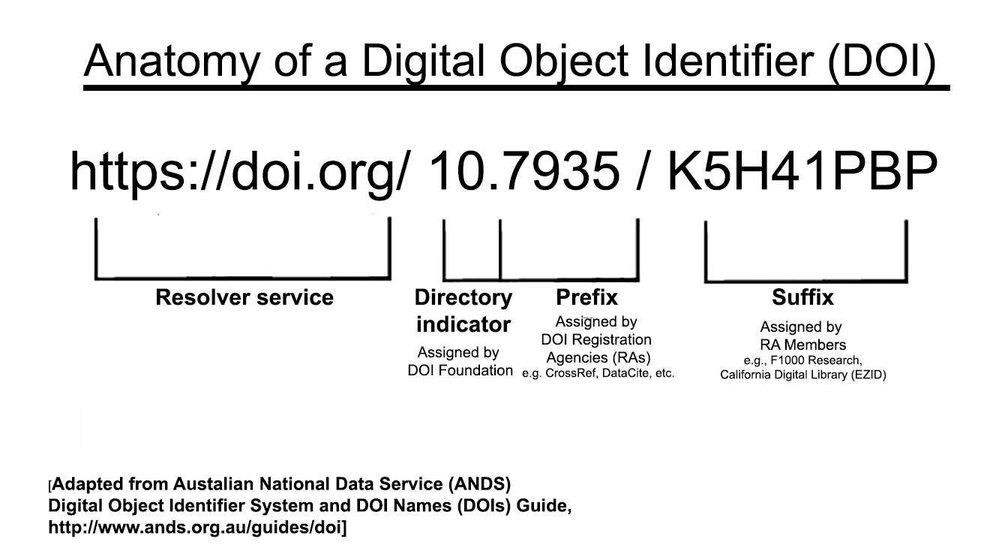

Anatomy of the DOI System
20 minutes
Learning Objectives
- Understand how the DOI system is organized
- Use the DOI resolution system to determine which Registration Agency maintains a given DOI
The International DOI System is the overall
infrastructure by which Digital Object Identifiers are assigned, registered,
resolved, and associated with valuable metadata including citation,
availability of full text, funder information, licensing information, and more.
The following components of the DOI System together make it work:
- The International DOI Federation
(IDF) is responsible for the
overall governance of the system. IDF is a not-for-profit membership
organization that oversees the operations of the federation of Registration
Agencies which provide Digital Object Identifier (DOI) services and
registration. IDF is also the registration authority for the ISO standard (ISO
26324) for the DOI system.
- Registration Agencies (RAs)
provide services to Registrants (or Members) — allocating DOI name prefixes,
registering DOI names and providing the necessary infrastructure to allow
Registrants to declare and maintain metadata and state data. Each RA must
follow basic protocols and standards of the DOI sytem, including a minimum
metadata standard known as the DOI kernel. Yet each RA has the freedom to
implement additional metadata standards, track a range of information about a
given DOI resource, and offer public services for querying their databases. As
an example, the Registration Agency CrossRef registers a range of metadata
about scholarly resources including funding data, license associated with the
digital object, author data including ORCiD numbers, and more – see April
Ondis’ CrossRef Blog posting “Beyond the DOI to richer
metadata“
for more info about their services.
- Registrants (or Members) of a given Registration Agency register DOIs for
information resources under their responsibility. Registrants include
publishers, data centers, universities, libraries, university presses, and open
data sharing repositories such as Zenodo. Registrants must follow the policies
and procedures established by the RA in order to register DOIs. Each Registrant
is given a unique member code that uniquely distinguishes them amongst all
members of the RA. Each member also receives one or more unique prefix codes
that forms the first part of the DOI sequence. The Registrant then uses the
suffix portion of the DOI sequence to assign unique names to each resource they
manage.
The metadata associated with the DOI is often rich enough to provide useful
data for a researcher. This lesson and the next look at the array of useful
public data associated with DOIs.

Exercise 1B(1). Demonstrate that a DOI redirects to the landing page for an
associated digital object and retrieve the content of the landing page.
$ curl -s -S -L http://dx.doi.org/10.1103/PhysRev.109.193 >landing1.txt
$ curl -s -S -L http://dx.doi.org/10.7935/K5H41PBP >landing2.txt
$ wc landing*.txt
Exercise 1B(2). Given a DOI, determine which Registration Agency issued it
$ curl http://doi.crossref.org/doiRA/10.5170/CERN-2000-001.101
$ curl http://doi.crossref.org/doiRA/10.5170/CERN-2000-001.101,
doi.crossref.org/doiRA/10.2307/1578389
Note that this handy lookup service is provided by one of the Registration
Agencies, CrossRef, yet the query also works for DOIs issued by other
Registration Agencies! This demonstrates that each DOI Agency provides an array
of services beyond registering and maintaining DOIs for their members; savvy
researchers may wish to check with more than one RA to get useful information.
Exercise 1B(3). Retrieve a list of DataCite members and determine the
format of the data provided
$ curl -s -S http://api.datacite.org/members >datacite.txt
$ less datacite.txt
Note that the data comes from the Datacite API in JSON format (Javascript
Object Notation) – an increasingly popular metadata standard for Web services.
JSON is great for machines to read, but not so much for humans! So let’s
convert it to something easier on the eyes.
$ cat datacite.txt | tr ',' '\012' >datacite_pretty.txt
$ less datacite_pretty.txt
Previous: What are Digital Object Identifiers and Why Do They Matter to Researchers? Next: Register a DOI